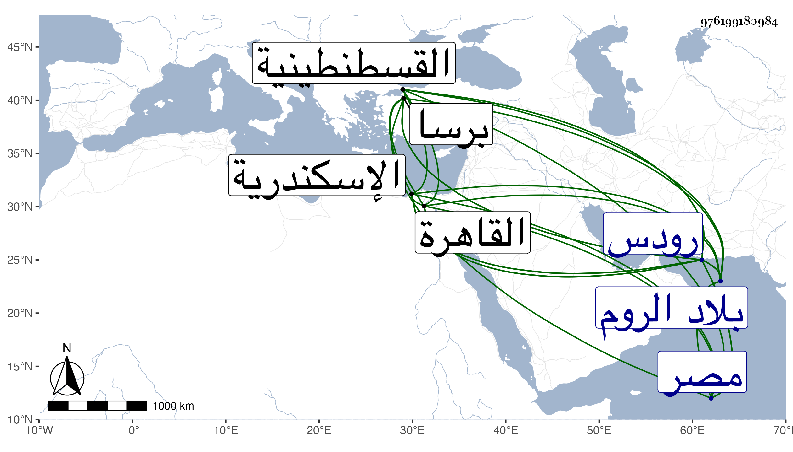

0902Sakhawi.DawLamic.ITO20230111-ara1.EIS1600.976199180984
Biography ID: 976199180984
485
أبو يزيد بن محمد بن مراد أسن إخوته وملك الروم الماضي أبوه وجده استقر في المملكة بعد أبيه في سنة ست وثمانين وثمانمائة وقد زاحم الأربعين وسلك طريقته في غزو الفرنج بحيث استولى على بلدين لهم كان سبق من أبيه محاصرته لهما فلم يتهيأ له وثار أخوه جام في عسكر انتمى إليه حتى دخل برصا وملك قلعتها فبادر هذا لمحاصرته فلم ينهض ذاك لمقابلته مع التقاء العسكرين وفر إلى الديار المصرية فأكرمه السلطان وجهزه للحج في أبهة وضخامة ولما رجع كاتبه بعض أمرائهم مغريا له على أخيه ووعده بالقيام في خدمته فاستمهله السلطان ليجهز معه عسكرا فما وافق جل الأمراء على ذلك بل أشار تغرى بردى ططر لإيداعه اسكندرية حتى تسكن الفتنة فما تم وتوجه مع تركه أمه وبنيه بالقاهرة فلما قارب البلاد خرج إليه أخوه فلم يستطع أن يقابله وفر إلى جهة رودس فأسر بها وكاتب صاحبها كل من أخيه والسلطان ليجهزه له مع الوعد والترغيب فلم يجب وآل الأمر إلى إرساله من رودس إلى أقرنصا فيما قيل وبالجملة فهو إلى الآن في قبضة الفرنج ولو قدر إلزام السلطان له بالإقامة كفعله في أخى السيد محمد بن بركات وفي حفيد حسن باك أو حبسه لاندفع شر كبير فقد جرت في غضون ذلك حوادث تلف فيها رجال وأموال شرحت في محالها ورأيت من يذكره باشتغال في العلوم وأنه قرأ في شرح المواقف وفي المقامات ومقدماتها من كتب الأدب وأنه ربما نظم مع سلوكه طريق أبيه في تعظيم العلماء والغرباء والكرم وتجديده لزوايا ومساجد وغيرها بل وأجرى الماء من مسافة نحو ستة أيام إلى اسطنبول وكثرت لذلك فيها السبل وعد ذلك في مآثره وصدقاته لأهل الحرمين واصلة وصلاته متواصلة وهو مع هذا ممتهن لنفسه في لباسه غير متأنق فيه مع عدم شكالته ونقص شارته وإقباله فيما قيل على ما لا يرتضي وفساد عقيدته وآل أمره مع سلطاننا إلى التظاهر بالمصادقة وتسليم القلاع التي كانت سببا للتنازع وأهدى كل منهما للآخر ما شرح في الحوادث فالله يحسن العاقبة .
